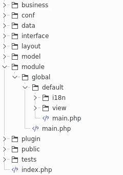
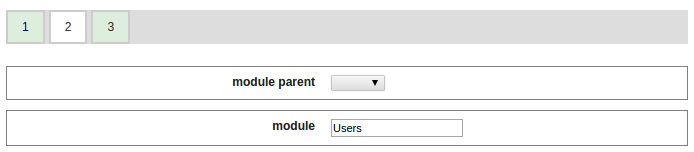

Software Craftsmanship
Sommaire
- Introduction- Présentation dans le builder
- Exemple d'un module utilisant l'architecture hexagonale
- L'impact sur la couche model
Le builder
A son habitude, le générateur du framework vous facilite le travail.Une fois généré, vous avec l'architecture suivante:

Des modules de génération en plusieurs étapes
Pour simplifier les interfaces et éviter de les surcharger de nombreux champs, un nouveau moteur de génération multi-pages fait son apparition.Vous avez en amont le nombre d'étapes (avec sur fond blanc la page en cours).
Génération de module avec héritage
Sur ce template, chaque module est créé "sous" un module parent dont il herite les méthodes before() et after()
Vous avez donc une nouvelle ligne de génération "module parent"
Et lors de la génération d'un module, vous devez sélectionner son parent:
Par exemple:

Et le module généré est physiquement "sous" ce module parent
Notez le code du module parent:
<?php
class module_global extends abstract_module {
protected $oLayout;
public function before() {
$sLang = _root::getConfigVar('language.default');
if (isset($_SESSION['lang'])) {
$sLang = $_SESSION['lang'];
}
_root::getI18n()->load($sLang);
_root::getI18n()->loadFromDir(_root::getConfigVar('path.module').$this->_sModulePath.'/i18n/');
$this->oLayout = new _layout('bootstrap');
}
public function after() {
$this->oLayout->show();
}
}
et celui du module enfant:
<?php
class module_global_Users extends module_global {
protected $_sModulePath = 'global/Users';
public function getView($sView_) {
return new _view($this->_sModulePath . '::' . $sView_);
}